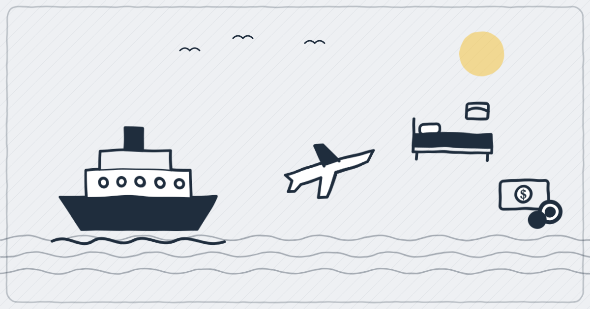

Is a Cruise Cheaper Than Flights and Hotels?

For a trip that visits several places in a week, a cruise is usually cheaper and far simpler, because transport between stops, your room and most meals are one price. For a week in one city or on one beach, flights and a hotel usually cost less. Compare full totals with extras, not fare against room rate.
Put a cruise fare next to a week of hotel rates and the hotel looks cheaper almost every time. Add in the meals, the trains between cities, the taxis and the admissions, and the gap narrows or disappears. The honest answer is that a cruise buys several destinations and almost no logistics, while an independent trip buys depth in one or two places. Price both all the way through and the right choice is usually obvious.
What a cruise fare includes that a hotel rate does not
A cruise fare bundles the three things that make a multi-stop land trip expensive: moving between places, a room every night and most of your food. Entertainment, pools, the gym and kids' clubs are thrown in. What you pay for on top is fairly predictable:
- Gratuities, around US$16–20 per person per day at recent rates (roughly C$22–28)
- Alcohol, specialty coffee, soft drinks and bottled water
- Wifi, specialty dining and spa treatments
- Shore excursions and the transport from port to town
- Port taxes and fees, if the headline fare leaves them out
- A hotel night before sailing, if you fly in
A land trip has none of those, but it has every breakfast, lunch and dinner, trains or rental cars, airport transfers, hotel taxes, resort fees in the US and tourist taxes in much of Europe, plus the same tours and admissions you would buy as excursions.
A worked example: one week in the Mediterranean
Take a couple from Toronto or New York at recent summer prices, leaving out the transatlantic flights, which cost about the same either way. Option one is a 7-night round trip from Barcelona in an inside cabin, calling at five or six ports. Option two is seven nights split between Barcelona, Florence and Rome in mid-range hotels, travelling by train.
| Per couple | 7-night cruise | Three cities by train |
|---|---|---|
| Base cost (fare, or hotels) | US$1,600–2,600 (C$2,200–3,600) | US$1,150–1,950 (C$1,600–2,700) |
| Port taxes and fees | US$290–510 | n/a |
| Hotel night before sailing | US$180–290 | n/a |
| Trains between cities | included | US$215–435 |
| Food | mostly included | US$650–1,000 |
| Gratuities and tips | US$230–275 | within meal costs |
| Drinks and coffee | US$215–435 | within meal costs |
| Excursions, port transfers, admissions | US$435–1,090 | US$290–650 |
| Approximate total | US$3,000–5,200 (C$4,100–7,200) | US$2,300–4,050 (C$3,200–5,600) |
The land trip comes in lower, by a few hundred to a thousand dollars. But it covers three cities. The cruise typically shows you Marseille, Florence by way of Livorno, Rome by way of Civitavecchia and a couple more, without a single repack. Several of those ports sit an hour from the city, which is why port transfers are a real line on the cruise side and why how many shore excursions to book matters to the budget.
When a cruise is the cheaper vacation
- Alaska. Juneau has no road to the outside world, and flights between Southeast Alaska towns are pricey. A ship from Vancouver or Seattle is the only practical way to see three or four ports in a week. See what an Alaska cruise from Vancouver costs.
- Several Caribbean islands. Inter-island flights are limited and expensive; ferries barely exist between most cruise ports.
- Families of four or five. One cabin with pull-down berths and a buffet that feeds everyone replaces two hotel rooms and three restaurant bills a day.
- Drive-to ports. Live within reach of Galveston, Port Canaveral, New York, Baltimore, Seattle or Vancouver and the flight line in your budget disappears entirely.
- Anyone who hates packing. Unpack once and wake up somewhere new. That has no dollar value on a spreadsheet, but it is why many people never go back to land trips.
When flights and a hotel win
- One beach for a week. A direct flight from Toronto, Montreal or Chicago to a resort skips the Florida flight and the pre-cruise hotel a Caribbean cruise usually needs. If you are set on the ship, getting from Toronto to a Miami cruise covers the extra legs.
- Slow travel. Evenings in Rome rather than an all-aboard at 5 p.m., three days in one city, dinner where the locals eat.
- Points and miles. Big hotel or airline balances cover land costs; they rarely cover cruise fares at good value.
- Specific needs. Dietary, mobility or scheduling requirements that are easier to meet when you choose every hotel and meal yourself.
Costs people forget on the cruise side
The hotel night before embarkation, drinks that add up at US$10–15 each, wifi, and tours that exist mainly to get you from a distant port into the city. None of them is large on its own; together they can add 20–30% to the fare.
Costs people forget on the land side
Baggage fees on budget airlines, taxis to and from stations, city tourist taxes of a few euros per person per night, parking, and the half-days lost to checking out and travelling. Three hotels in a week means three check-outs, three transfers and three chances to pay for an early arrival.
Both sides forget the same thing: travel medical insurance. Provincial plans in Canada pay very little outside the country, and US plans often exclude care at sea or abroad. Budget for it whichever way you travel.
How to run the comparison for your own trip
- Pick identical dates and a comparable standard of room.
- List every line from the table above for both options, with honest ranges.
- Convert everything to one currency at your card's real rate. Canadians should read whether to pay in CAD or USD first.
- Divide by nights and by places seen.
- If the totals land within 10–15% of each other, choose on travel style, not price.
Want this checked for your own sailing? A licensed cruise consultant can price it up and answer questions for free, with no obligation.
Ask a cruise expert →The deciding question
How many places do you want to wake up in? One or two, book it yourself. Four or more in a week, the ship will almost always be cheaper, and it will certainly be easier.
Questions people also ask
What is cheaper, a cruise or a vacation on land?
It depends on how many places you want to see. Multi-stop trips such as Alaska's Inside Passage or a string of Caribbean islands are usually cheaper by ship. One destination for a week is usually cheaper booked independently, since you are not paying for a floating resort you barely use.
What extra costs does a cruise have that a hotel does not?
Daily gratuities of roughly US$16–20 per person, alcohol and specialty coffee, wifi, specialty restaurants, shore excursions and sometimes port taxes on top of the quoted fare. Hotels have their own extras: every meal, local transport, parking, resort fees and city tourist taxes.
Do you save on flights by taking a cruise?
Only if you live within driving distance of a port such as Vancouver, Seattle, New York, Galveston or Port Canaveral. Otherwise the flight to the start city costs about the same as a flight to a resort, so the comparison should focus on what you spend after landing.